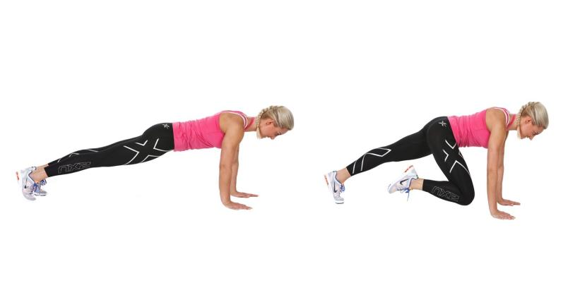

Hva er tabata?
Tabata er en god måte å trene fitness på og en god treningsøkt for å gå ned i vekt. Dersom du ønsker resultater på veldig kort tid er dette en treningsmetode for deg.
Gode resultater på kort tid
Varm opp ordentlig med dynamiske øvelser istedenfor statiske strekninger. Vær forberedt på å svette! Det er effektivt, som Dr. Tabata studie viste, og til slutt forbedrer utholdenhet. Den lærer kroppen din til å tåle melkesyre. Når du trener i en høy intensitetssone, blir terskelen høyere. Den holder også forbrenning på høygir. En av de største fordelene med anaerob trening er at kroppen din forbrenner fett i 24 timer etter treningen. Slik at mengden av fett som kan brennes ved hjelp Tabata trening er det som trekker mange mennesker til å bruke det. Som et vekttap taktikk, er Tabata et flott verktøy.
Slik gjør man det:
Hver øvelse varer i 20 sekunder, så viler man 10 sekunder før man gjør neste øvelse igjen. Slik gjør man i 8 repetisjoner. I 10 sekunders pausene er det viktig å få igjen pusten og gjøre seg klar for neste øvelse. Dette blir en økt på ca 16 minutter. Når du får taket på ting, kan du lage to eller tre forskjellige Tabata rutiner med opptil tolv forskjellige øvelser og kjøre gjennom to forskjellige rutiner pr runde. Med en fem til åtte minutters oppvarming og cool down, har du en effektiv trening. 20 sekunders intervaller kan virke veldig lite, men på maks kapasitet, vil disse 20 sekunder virke som de lengste 20 sekunder av livet ditt.
Forslag til øvelser
Knebøy
Burpee
Splitthopp
Mountain Climber


Viktig å tenke på
- Tabata trening er ikke for nybegynnere. Tabata egner seg best for deg som har trent en del tidligere og som er komfortable med høy intensitet. Intensiteten akkumulerer, med en topp i nærheten av slutten. Det er lett at intensiteten blir for utfordrende hvis du ikke er vant til denne type trening.
- Tabata kan bli for intenst for noen. Hvis du starter med å gi alt du har, på høy intensitet intervaller, vil 4-minutters syklus føler at de lengste, mest ubehage 4 minutter av livet ditt.
- Det er alltid en større risiko for skader når du holder på høy effekt, høy intensitet trening. Minimer risikoen ved å sikre at du er sprek nok for denne type trening.Dette vil inkludere å jobbe deg opp på intensitet og varighet. Kontroller også at du er helt varm før du begynner din Tabata økt.
- Fire minutter av samme øvelse, selv med pauser i mellom, kan bli monotont og raskt slite ut musklene. Dette kan føre til at du møter utfordringer ved motivasjonen dersom du ikke er mentalt forberedt!
Hvor kommer Tabata fra?
Ordet Tabata kommer fra mannen som fant opp Tabata, nemlig Dr. Izumi Tabata. Han er en japansk lege og forsker Han gjennomførte et studie med en intervall-basert treningsmodell. Hans mål var å se om idrettsutøvere vil dra nytte av en 20/10 økt gjentatt åtte ganger. 20/10 betyr 20 sekunder av all-out trening etterfulgt av 10 sekunder med hvile. Dette legger opp til fire minutter totalt. Dr. Tabata tok to grupper og satt dem på et treningsprogram i seks uker. Kontrollgruppen fikk en time med moderat intensiv trening fem ganger i uken. Den andre gruppen gjorde høy intensitet Tabata-stil trening, som legger opp til 1800 minutter med trening for kontrollgruppen versus 120 minutter med trening for Tabata gruppen over seks ukers periode. Resultatene taler for seg selv. Tabata-gruppen forbedret både sine aerobe og anaerobe fitness nivåer. Den anaerobe kondisjonen økte med 28%.
Populær treningsform
Intervalltrening er ikke nytt, men har økt i popularitet de siste årene. Intervallene ble opprinnelig laget for løping. Et eksempel på Tabata trening for løpere er 20-sekunders spurt og 10 sekunder med hvile. Dette forbedrer kondisjonen. Tabata protokollen kan brukes til kjernestyrke samt vekttrening.
Stå på videre
Uansett hvilken trening du velger, bør ditt valg bruke et stort antall muskler for å få maksimalt utbytte. Det er normalt å føle en viss sårhet under den første uken av Tabata trening. Men kroppen din vil vende seg til treningen, og du vil bare føle svak til moderat sårhet i begynnelsen.
Tips for best resultat:
Gjør minst åtte runder, klarer du mer så gjør du det
Fokuser på de store muskelgruppene
Dersom du trener tabata ofte bør du variere øvelsene
Husk oppvarming før, og uttøying etter trening